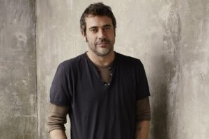

Возвращение Джона Винчестера

Премьера 11-го сезона сериала «Сверхъестественное» состоится 7 октября 2015 года. В начале июля началась работа над новыми сериями. По словам создателей сериала, в этом сезоне зрителей ждет много интересного и необычного, что заставит посмотреть на все ранее происходившее на экране с другой точки зрения. Хотя подробная информация о будущих сериях держится в глубокой тайне, некоторые детали уже становятся известными. В частности исполнительный продюсер Эндрю Дэбб на Comic Con заявил о возможном возвращении в сериал отца братьев Винчестер, которого играл Джеффри Дин Морган.
Судьба Джона
В начале сериала Мэри, мать Дина и Сэма Винчестеров, была подло убита кровожадным и желтоглазым демоном Анной Мильтоном. Ее муж Джон, в конце концов, впадает в депрессию и умирает от постоянных воспоминаний о своей любимой жене. Добрый ангел Кастиэль отправляет сыновей в прошлое, чтобы они смогли спасти свою мать от злого демона, но им не хватает сноровки и умения, чтобы справиться с поставленной задачей. Тогда на помощь Джону приходит архангел Михаил. Он убивает Анну и его помощника, возвращает сыновей в настоящее, а уцелевшим на тот период супругам стирает память.
В детстве Джон Винчестер очень тяжело пережил смерть своего отца от рук представителей тайного общества. Он бросил учебу в университете, стал военным моряком и заслужил медали за проявленное мужество во время войны во Вьетнаме. После службы на флоте он работал простым механиком, женился на Мэри Кэмпбел. Оставшись вдовцом, он обучает старшего сына Дина искусству борьбы с нечистой силой и перед смертью просит убить младшего Сэма, если тот станет на путь зла. Душа Джона попадает в ад, где ее мучает демон Элистер. После длительных мучений она вырывается из ада, когда вход в него останется приоткрытым на некоторое время. В 4-м сезоне Джон успевает помочь своим сыновьям перед тем, как навсегда раствориться в белом свете.
Джеффри Морган готов к съемкам
Джеффри Дин Морган заявил, что он готов к своему появлению в 11-м сезоне «Сверхъестественного». Правда, в каком обличии состоится его возвращение, рассказывать журналистам отказался. Параллельно актер будет также сниматься в остросюжетном детективе «Утешение» Афонсо Пойарто и фильме «Бэтмен против Супермена. На заре справедливости». В конце мая актер закончил съемки в мини-сериале «Секретная жизнь Мэрилин Монро» и приступил к работе в телесериале «Техасское восстание» о войне между Мексикой и Техасом в 1835-36 гг.